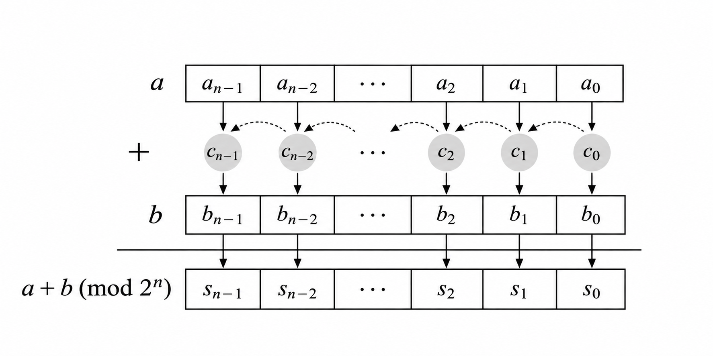
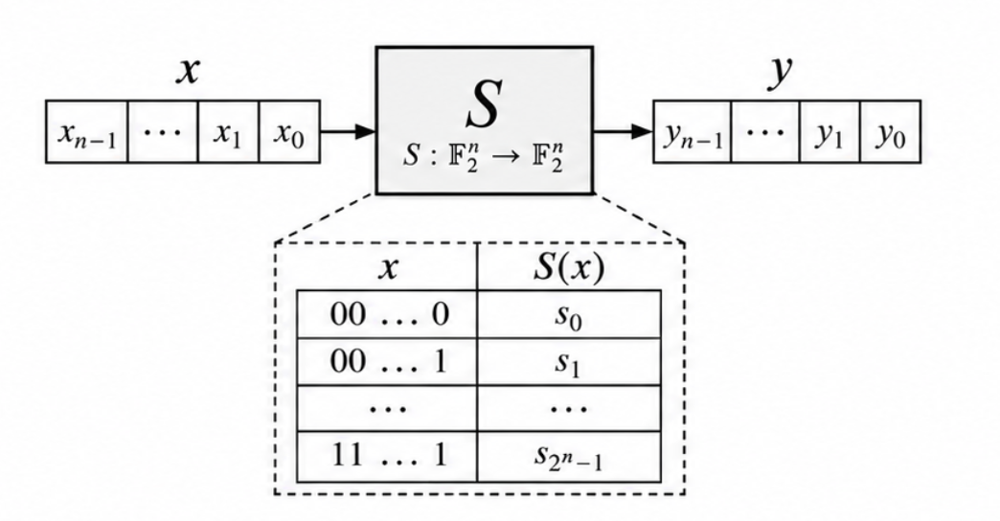
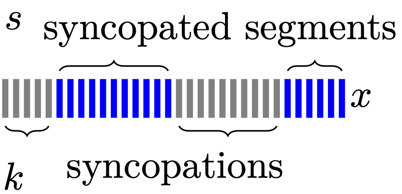

Research Projects
Below are some research topics that I am currently exploring.

Design of ARX Ciphers
Hash design: QuantaSylva Hash was submitted to ICCS's NGCC hash competition of China in April 30, and now is in the list of first-round candidates NGCC: First-Round Candidate Cryptographic Hash Algorithms .

Design of Sbox-based Ciphers
Now working on the design of wide block ciphers to ICCS's NGCC competitions in China, Call for Comments on Submission Requirements for Block Cipher Algorithms.

Development of syncopation method
I am long-term working on developing applications of the syncopation technique, which was introduced at CRYPTO 2023, and extended into dual-syncopation technique at Eurocrypt 2026.